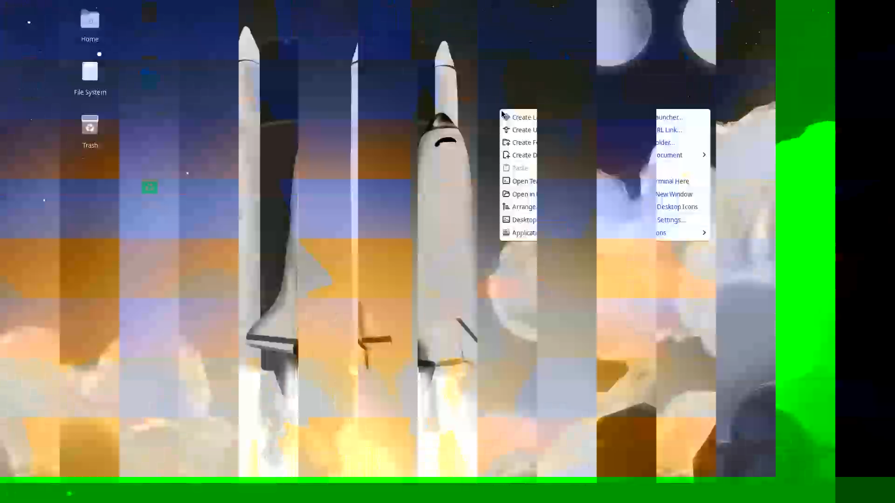
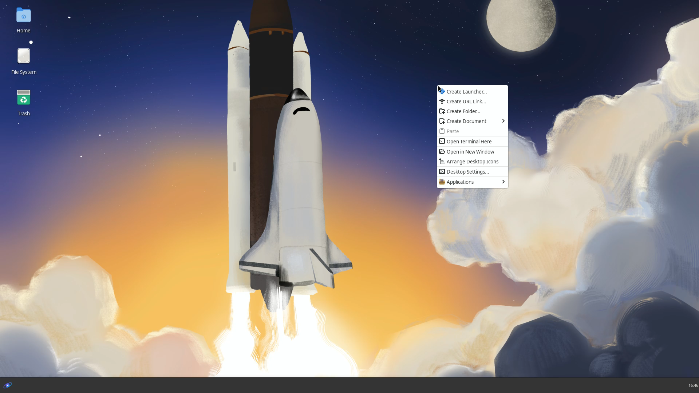
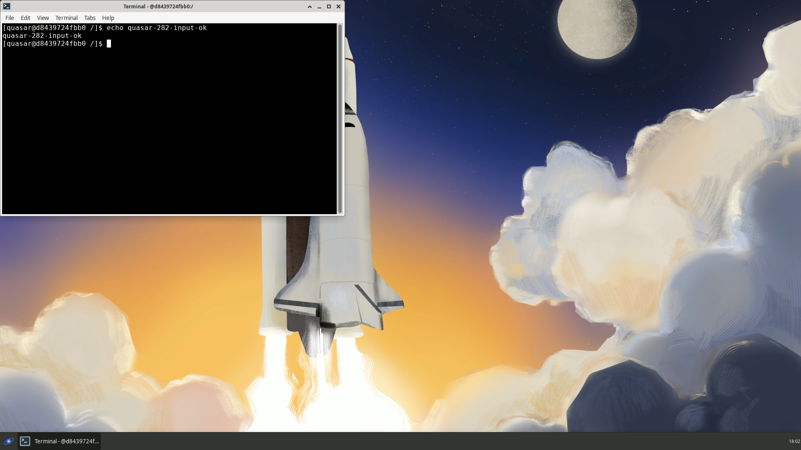

#281 and #282 — overnight validation
2026-09-20
This is a record of overnight validation work. Nothing described here was merged to develop, main, or any other branch owned by this repository.
Part 1 — #281
The AMD test host now streams a correct picture on the default Vulkan encoder with nothing configured, and NVIDIA is unchanged in encoder, picture, startup time and VRAM.
Part 2 — #282
The media probe now verifies pixels; healthy hosts score 0.0003 on 30 of 30 agent restarts and the reproduced corruption fails 10 of 10 at 0.2533, either side of a 0.01 floor.
Is anything broken?
develop: untouched, stillfcaaae9.main: untouched.initiative/resilient-host-architecture: untouched. Nothing merged anywhere.- Fork
develop: moved, deliberately and conditionally,1ea8092→631cebb, the single action the owner authorised on the condition that the live exercise passed on both vendors. It did. Fork branchessync/upstream-stable,fix/keymap-memfd-teardownandpatches/vulkan-av1-encodewere not touched. Nothing was pushed togames-on-whales, and no upstream PR or issue was opened or commented on. - No tags, no published images, no Actions builds, no force-push.
Before/after proof
All images are decoded video frames captured with canvas drawImage(video) at the video element's native resolution — not page screenshots. The AMD 1080p/720p "before" images show videotestsrc pattern=smpte100 (vertical colour bars); corruption shows as a bright green band along the bottom edge and fine vertical striping inside each bar. The desktop pair is much easier to read by eye.





The readiness card and the refused launch
No UI screenshot was taken: the stacks were torn down before the report was built, and a page screenshot would have risked showing an address. The exact API strings are below.
Healthy (AMD test host, after #282, nothing configured)
pass | GPU 1 composited and encoded frames: encoded 30 frames with vulkanh264enc on
/dev/dri/renderD129; the decoded picture matched what the compositor fed in
(worst plane 0.0003 over 25 frames)
gate: {"state": "active", "blocking": []}
Corrupt (same host, WOLF_VULKAN_LINEAR_ENCSRC=0)
STATUS : fail
SUMMARY: GPU 1 could not composite and encode: vulkanh264enc: the picture did not survive:
25.33% of the decoded u,v samples do not match the picture the compositor fed in on
/dev/dri/renderD129 (worst plane over 25 decoded frames). The GPU is working — the
frames encoded. The fault is in the compositor-to-encoder handoff or in the encoder
itself. Set QUASAR_ENCODER for this host to another encoder (va, nvenc or openh264)
and recreate the agent: if the picture is then correct, the encode path is at fault.
BLOCKS : {"scope": "gpu", "gpu_index": 1, "enforced_by": "control_plane"}
GATE : {"state":"active","blocking":[{"check_id":"media_probe_gpu1","scope":"gpu",
"gpu_index":1,"enforced_by":"control_plane","overridden":false}]}
The launch that was then refused
{"error":{"code":"host_not_ready","message":"the host that would run this needs its
administrator's attention; try again once they have looked at it"}}
Table: live-exercise matrix (Part 1)
| # | host | item | result |
|---|---|---|---|
| 1 | AMD | default encoder resolves to vulkanh264enc | performed |
| 2 | AMD | compositor picks LINEAR itself, readable superset granted | performed |
| 3 | AMD | 1080p real browser session, decoded frame | performed — clean |
| 4 | AMD | 720p real browser session, decoded frame | performed — clean |
| 5 | AMD | judged by eye AND numerically | performed |
| 6 | AMD | ≥2 consecutive sessions, clean teardown each | performed — three |
| 7 | AMD | mouse, keyboard, audio | performed |
| 8 | AMD | knob forcing tiled ⇒ corrupt again | performed |
| 9 | AMD | QUASAR_ENCODER=va still clean | performed — byte-identical |
| 10 | AMD | encode_ms linear vs tiled | performed |
| 11 | NVIDIA | fallback warning once per session | performed |
| 12 | NVIDIA | same encoder as baseline | performed |
| 13 | NVIDIA | readable superset retained (external_resize_supported: true) | performed |
| 14 | NVIDIA | clean 1080p H.264 | performed |
| 15 | NVIDIA | clean 1440p AV1 | performed |
| 16 | NVIDIA | mouse, keyboard, audio | performed |
| 17 | NVIDIA | startup time not worse | performed — 1003 ms both |
| 18 | NVIDIA | VRAM steady across ≥2 sessions | performed |
| 19 | NVIDIA | NVENC fallback smoke | performed by equivalent procedure |
| 20 | NVIDIA | bench run submitted to quasar-bench | UNPERFORMED — nothing answers on port 9400 on this workstation or any lab host, and there is no bench entry in the host config |
| 21 | both | #264 fault harness, no row regression | performed |
| 22 | both | HEVC from a browser | UNPERFORMED — the test browser cannot decode HEVC |
| 23 | — | Intel | UNPERFORMED — no hardware; nothing claimed |
Table: encode_ms, AMD test host, 1080p60
| encode-src tiling | run 1 p50 | run 2 p50 | p95 run 1 | p95 run 2 |
|---|---|---|---|---|
| LINEAR (new default) | 3.003 ms | 3.000 ms | 3.090 ms | 3.109 ms |
| OPTIMAL (forced tiled) | 3.365 ms | 3.353 ms | 3.475 ms | 3.466 ms |
LINEAR is ~0.36 ms / ~11% FASTER. This contradicts the prediction the exercise started with. NVIDIA, unaffected (never gets a linear image): 1080p H.264 p50 1.266 → 1.159 ms; 1440p AV1 p50 1.693 → 1.659 ms.
Table: startup time and VRAM, NVIDIA test host
Browser time-to-decode: 1003 ms before, 1003 ms after.
| point | before | after |
|---|---|---|
| before session 1 | 34 MiB | 34 MiB |
| during session 1 (1080p H.264) | 779 MiB | 779 MiB |
| after session 1 teardown | 39 MiB | 39 MiB |
| during session 2 (1440p AV1) | 812 MiB | 812 MiB |
| after session 2 teardown | 39 MiB | 39 MiB |
Table: probe score distributions and margins (Part 2)
Each population = 10 consecutive agent restarts, each triggering a fresh probe.
| population | host | n | score (min = max, no variance) | verdict |
|---|---|---|---|---|
| healthy, Vulkan (the #281 default) | AMD | 10 | 0.0003 | pass ×10 |
| healthy, VA | AMD | 10 | 0.0003 | pass ×10 |
| healthy, Vulkan | NVIDIA | 10 | 0.0003 | pass ×10 |
| corrupt (WOLF_VULKAN_LINEAR_ENCSRC=0) | AMD | 10 | 0.2533 | fail ×10 |
Floor = 0.01, pre-registered from the codec's properties BEFORE the campaign. Margins: healthy is 33× below the floor; corrupt is 25× above it; the two populations are 844× apart.
Table: restart loop
| configuration | restarts | passed | failed | false failures |
|---|---|---|---|---|
| healthy AMD Vulkan | 10 | 10 | 0 | 0 |
| healthy AMD VA | 10 | 10 | 0 | 0 |
| healthy NVIDIA Vulkan | 10 | 10 | 0 | 0 |
| corrupt AMD (must fail) | 10 | 0 | 10 | n/a — this is the intended result |
| total healthy | 30 | 30 | 0 | 0 |
Table: probe duration, against its 15 s deadline
| host | before #282 | after #282 | delta | % of budget used after |
|---|---|---|---|---|
| AMD | 1.853 s | 1.896 s | +43 ms (+2.3%) | 12.6% |
| NVIDIA | 2.864 s | 3.155 s | +291 ms (+10.2%) | 21.0% |
Agent log start → last probe finished: AMD 3.01 → 2.91 s; NVIDIA 5.08 → 6.17 s. These are single observations including ordinary start-up variance; report as measured, not as a trend.
Table: fault harness totals against the reference
Reference is the run recorded at 23e995d in docs/reports/rh02-265/rerun-23e995d/.
| host | reference | Part 1 (image 8c5b716) | Part 2 (image 2cbc009) |
|---|---|---|---|
| AMD | 104 pass / 0 fail / 1 unperformed | 104 / 0 / 1 | 104 / 0 / 1 |
| NVIDIA | 97 / 0 / 4 | 97 / 0 / 4 | 97 / 0 / 4 |
No row regression in either part. No harness expectation was edited.
Table: gates against the baseline
Baseline taken on the untouched branch point fcaaae9 before any work started.
| gate | baseline | Part 1 (21524ec) | Part 2 (1ce4fb6) |
|---|---|---|---|
| make verify | rc 0 — 437 / 0 / 0 | rc 0 — 437 / 0 / 0 | rc 0 — 437 / 0 / 0 |
| make test-rust | rc 2 — already flaky | rc 0 — 1724 passed, 0 failed, 9 ignored | rc 0 — 1735 passed, 0 failed, 9 ignored |
| make test-go | not taken | rc 0 — 43 packages ok | rc 0 — 43 packages ok |
| make test-web | not taken | rc 0 — 236 files, 3080 tests | rc 0 |
| make preflight | not taken | rc 0 | rc 0 |
| leak scan tree | not taken | clean | clean |
| leak scan --issues | not taken | clean | clean |
The baseline make test-rust was already red on the untouched branch point, and flaky: five consecutive runs gave 3 failures, 1, 1, 1, then a clean pass, with a different test failing each time. Cause: capacity.rs tests call std::env::set_var("QUASAR_ENCODER", …) with no serialisation while session::settings tests read the same process-global value, and Rust runs tests in parallel threads. Filed as #285. Nothing to do with either branch — neither changes that code.
What went wrong and what I did
| # | defect | hypothesis | result | fix |
|---|---|---|---|---|
| 1 | Fork change would not compile: cannot borrow profile_list as mutable more than once | The new tiling loop keeps both ImageCreateInfo builders alive across iterations so their push_next(&mut …) borrows overlap | Confirmed by the compiler | Gave the encode-only builder its own byte-identical profile chain; commented as duplication for the borrow checker |
| 2 | Design would have shipped a check blind to the defect it exists for | A review pass claimed the #272 signature on a black field is chroma-only and my Y-only metric would score ~0 | Confirmed independently by arithmetic: RGB(0,96,0) is Y 16, Cb 0, Cr 0 — luma identical to clean black, in both range conventions | Rewrote the metric to score all three planes and name the plane that tripped. On hardware every corrupt run named u,v |
| 3 | My first Indeterminate ruling had a block-lifting hole | Run 1 fails (block set), run 2's decoder times out, "stay pass" would clear the block on no evidence | Confirmed against amendment 11, which forbids it in terms | Retain the last definitive result instead; the existing parent plumbing already does this for exit code 3, so no new code |
| 4 | First fault-harness run on AMD failed 3 rows in scenario 2a (no_host_available, gpus=[]) | Environment: daemon log showed CDI: … couldn't initialize inotify: too many open files; fs.inotify.max_user_instances is 128 and two stacks plus the harness's nested engines exhausted it | Confirmed | Tore down the cohabiting stack and reran clean: 104/0/1. The kernel limit belongs to the Unraid host and was not touched |
| 5 | Two launches returned no_host_available right after an agent recreate | Transient; the host was online, unblocked and had free slots seconds later | Not root-caused | Added a settle wait after a recreate. Out of scope; recorded as an observation |
| 6 | encode_ms tiled/linear gap looked like an outlier | — | Re-measured; both arms reproduced to within 0.012 ms | Believed it |
| 7 | Accidentally pushed a temporary WIP commit as the #282 branch head | A failed rebase left a detached HEAD, so the real commit was not on the branch ref | Confirmed | Repaired without a force-push: carried the real tree forward and merged, so the accident stays visible in the history instead of being erased |
Regression tests added: 11 net new tests in probe_media.rs — the metric on synthetic frames (identical / lossy-like noise / column displacement / flat green region / black / white, asserting the ordering), every Indeterminate path, the range-from-caps rule, and a guard that the check id and its blocks have not moved.
Issues filed: #285 (flaky make test-rust from unserialised env mutation) and #286 (a session that dies host_lost mid-start leaves its udev-* directory in /run/quasar-agent forever — found by looking, invisible to the harness by design; the specimen was removed at teardown).
Not verified
- A native Unraid install — the owner's machine was never connected to, by instruction.
- HEVC in a browser — the test browser cannot decode it.
- Intel — no hardware in the lab; nothing is claimed.
- Multi-GPU placement.
- The quasar-bench run (pins-policy item 2) — unreachable, see matrix row 20.
- The pixel check verifies h264 only, because that is all the probe asks for. HEVC and AV1 corruption remain unverified by it on every vendor.
- A driver that accepts a LINEAR encode-src and then corrupts at encode time — no allocation-time fallback can see that.
- The luma half of #272 (column displacement) is invisible on the probe's flat black field by construction and always will be with this picture.
- A picture that is uniformly wrong in a way the per-plane level check misses would still pass.
- make nvenc-fallback-smoke itself was not run — its two load-bearing assertions were made directly instead, because the harness targets a host's standard stack and tonight's stacks were on isolated ports.
Decisions waiting for you
- Land fix/281-linear-encsrc-default (head
034d9f9) ontodevelop. The live exercise passed on both vendors; forkdevelopalready carries the commit. - Land fix/282-media-probe-pixels (head
1ce4fb6, contains #281). It is a blocking check, so this is the one that changes what happens to a host that fails. - #282's contract discrepancy. Its acceptance text says an Indeterminate verification maps to
warn; the frozen contract makeswarnunavailable to a check that carriesblocks. The contract was followed and nothing frozen was touched. The ticket's text needs amending or the ruling needs confirming. - The generic remediation string on a pixel mismatch. It still says "check the render node is passed to the agent container" when the frames demonstrably encoded. Fixing it properly widens the child probe's stdout contract; recorded rather than done.
- #285 and #286, both filed tonight, both
needs-triage. - #284: sync/upstream-stable merges cleanly on top of #281, the keymap fix is already on fork develop by content (only the test hardening is missing), and merging the sync branch resolves the one drifted patch (vulkanh265enc.patch) in Quasar's favour by itself.
The Fable consults
Three consults, all with the question, the code, the evidence, the constraints, and what I would have done by default.
| # | asked | said | what I did |
|---|---|---|---|
| 1 | Is the #281 allocation-ladder reorder right, and does the encode-src path really always copy? | The regression is real; tiling-outer/flags-inner is the right shape; add a per-device latch so a ring cannot split across two tilings; agreed the encode-src path always copies; predicted no encode_ms win and a possible modest regression | Adopted the ladder and the latch. Declined its suggestion to probe capabilities up front (more code, more risk, the ladder is enough). Its encode_ms prediction was wrong — measured 11% faster — and the report says so |
| 2 | Review the #282 tolerance design before any code | Caught that my Y-only metric would score ~0 on #272 (chroma-only on a flat field), that median-of-5 was too thin a sample, that my pass-on-Indeterminate ruling had a block-lifting hole, and that the tolerances should be pre-registered from the codec rather than tuned | Adopted all four, plus its implementation warnings (stride vs width, chroma plane geometry, range from caps, bus-error attribution, EOS/drain). Declined only its suggestion to give the compositor a background-colour property — a fork change that would have entangled #281's exercise with this one |
| 3 | (not needed) A third consult on a surprising hardware result was not required | — | No hardware result contradicted the prompt's predictions except encode_ms, which was re-measured and believed |
Everything either consult claimed about the code was re-read and confirmed before being acted on.
Models used
| task | model |
|---|---|
| Plan, every review, every gate, all hardware work, every commit, push and tracker action | Claude Opus 5 (1M context) |
| The fork change (vulkan_share.rs) against my written spec | Claude Sonnet — then compile-fixed and reviewed line by line by Opus |
| The #282 probe implementation against my written design | Claude Sonnet — then reviewed, with one dead metric removed, by Opus |
| The Quasar-side #281 documentation edits | Claude Sonnet |
| This HTML report, from this brief | Claude Sonnet |
| Design advice and higher-level planning (3 consults) | Claude Fable 5.1 |
No Haiku sub-agent was used: the link and pin-consistency checks it was earmarked for were single commands that were faster to run directly than to delegate.